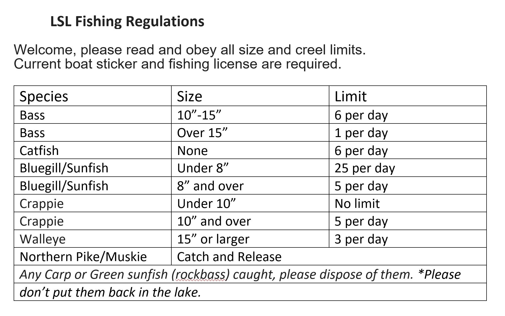

Fishing

Updated April 2021
Fishing at Little Swan Lake is limited to members and their guests, with Illinois licensing and state fishing laws still applying. Review the current lake rules, catch-limit guidance, and member responsibilities before fishing.
Fishing Rules
- All members and guests must be licensed by the Illinois Department of Natural Resources.
- State of Illinois fishing laws must be observed, as enforced by the Illinois Department of Conservation.
- Fishing is limited to pole and line only. All other means are prohibited except by permit issued by the Board of Directors.
- No live bait is to be used, with the exception of worms, crayfish, and minnows.
- The daily catch limit generally follows recommendations of the Illinois Department of Natural Resources. See the signs posted at the boat launch and at outlot DD for the current limits.
- Fishing rights are for members and their guests only. Guests must be accompanied by a member at all times.
- Please dispose of dead fish immediately by placing them in containers provided for this purpose on the outlots.
- Absolutely no fish are to be stocked.
- Bullfrogs may be harvested within the season and limits established by the Illinois Department of Natural Resources.
- Please do not litter or trespass on other people's property.
- A $25 fine will be assessed to anyone violating the fishing rules.
Enforcement & Member Responsibilities
Anyone who believes that fishing privileges are being abused or that trespassing is occurring should notify the patrolman.
Members should carry their issued membership cards for identification as a Little Swan Lake Club member.
Citations will be issued by the patrolman for violations of the fishing rules.
Current Fishing Regulations Sign
The lake signs posted at the boat launch and outlot DD should be treated as the current source for catch limits.
